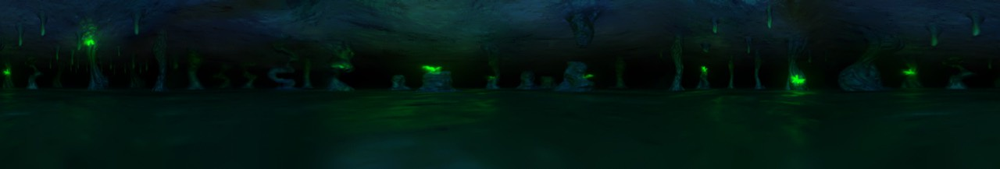
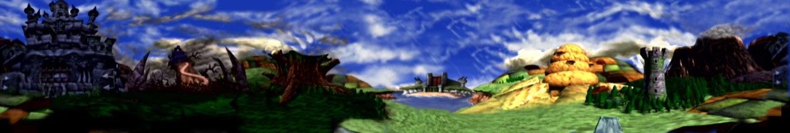
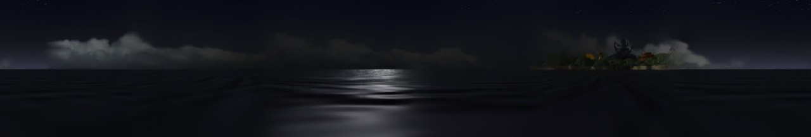
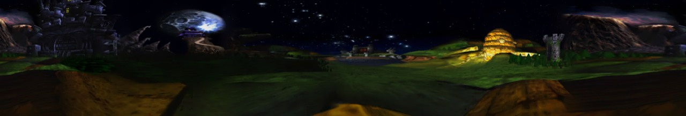
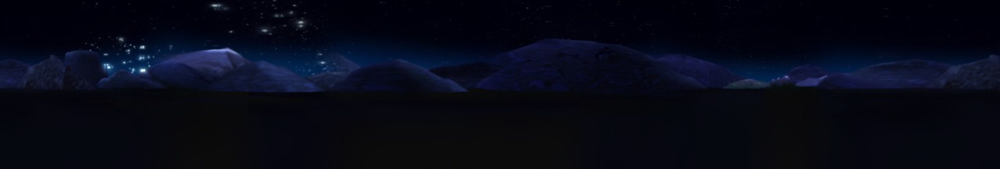
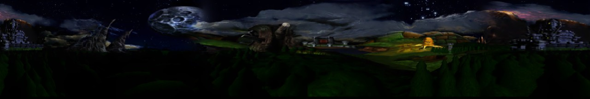
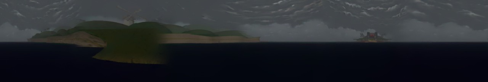

Conker’s Skyboxes
- RR-001
- Filed
- Set
- 7 panoramas, 1280×217
- Source
- Conker’s Bad Fur Day retail ROM
Loading panorama…
The panorama could not load. Choose another skybox, or open the source files below.

Sources & research
- Filing
- RR-001
- Set
- 7 panoramas
- Format
- 1280 × 217 JPEG
- Published
Seven extracted panoramas from the retail ROM, presented in recovery order. Select a strip for the full-size original. Captions lead with the in-game area; ROM identifiers and room usage follow.
Seven skyboxes

skybox_03 · assets0D/0003.bin · D_8008916C · room 0x23
skybox_04 · assets0D/0004.bin · D_80089180 · rooms 0x06, 0x07, 0x0B, 0x0C, 0x18, 0x38
skybox_00 · assets0D/0000.bin · D_80089130
skybox_02 · assets0D/0002.bin · D_80089158 · room 0x3B
skybox_06 · assets0D/0006.bin · D_800891A8 · room 0x3A
skybox_05 · assets0D/0005.bin · D_80089194 · rooms 0x3C, 0x3F
skybox_01 · assets0D/0001.bin · D_80089144 · room 0x13Source: the seven-image Imgur album (opens in a new tab). The original album stays linked; this viewer keeps local copies of those seven panoramas alongside the researched room cross-reference.
Files, labels and room usage
The ROM stores the renders as numeric assets0D entries, not friendly names. Chapter strings live in assets08; the room labels below follow the community level-ID research and the scene read from each panorama.
| Identifier / file | Archive label | Known room usage |
|---|---|---|
skybox_00assets0D/0000.binD_80089130 | Shared Default — Sea / Island / Castle | Shared/default bank; 51 rooms including Windy, Barn Boys, Ugga Bugga, Bats Tower, Sloprano, Spooky, It’s War, The Heist, and multiplayer rooms. |
skybox_01assets0D/0001.binD_80089144 | It’s War — Opening Base | 0x13 — Beginning spot of War, immediately after entering the base. |
skybox_02assets0D/0002.binD_80089158 | Windy — Night | 0x3B — Nasty/Nice area at night in Windy. |
skybox_03assets0D/0003.binD_8008916C | It’s War — Submarine Basin / Tedi Boss | 0x23 — It’s War: fighting the Tedi boss and submarines. |
skybox_04assets0D/0004.binD_80089180 | Windy — Daytime | Windy 0x06; Bats Tower 0x07, 0x0B; Barn Boys 0x0C; Hungover 0x18; Weasel transition 0x38. |
skybox_05assets0D/0005.binD_80089194 | Haunted Castle / Raptor — Night | Spooky Haunted Castle 0x3C; multiplayer Raptor 0x3F. |
skybox_06assets0D/0006.binD_800891A8 | The Heist — Feral Reserve Safe | 0x3A — The Heist, Feral Reserve safe. |
Exact chapter spellings in the ROM include Hungover, Windy, Bats Tower, Barn Boys, Sloprano, Ugga Bugga, Spooky, It’s War, and The Heist. Room IDs follow the level-ID research, while the chapter grouping is inferred from the room and panorama. Cross-check the level-ID research at mkst’s community research wiki (opens in a new tab).
Related: Conker’s 480i patch, CBFD480i, is in development with no public build. The earlier filing is RR-000, Tools of the Trade.